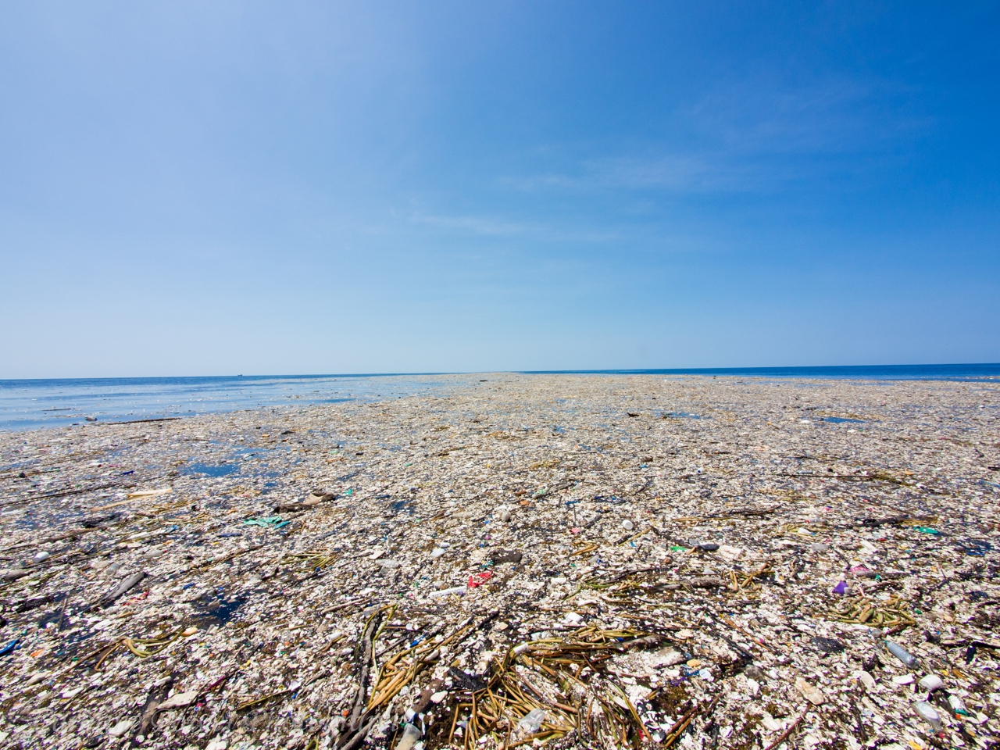

Description
Throughout the world there are floating islands of collected trash created by of plastic and other garbage. One of the most known examples is the Great Pacific Patch. To learn more about this, National Georgaphic provides more detail on this and the phenomenon: National Geographic. These islands are created through the inappropriate disposal of garbage, specifically garbage which does not bio-degrade in a quick and environmentally friendly way like plastic, moved into concentrated locations by Ocean currents. The maps present on this site display the currents and main garbage patches with color schemes aimed at specific types of color-blindness. The map styles were based on palette which are visible for those with the specific type of color blindness.
